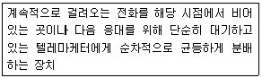
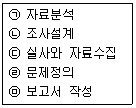
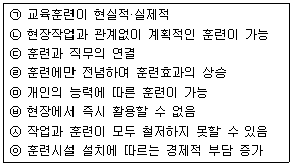
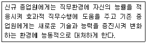
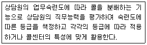
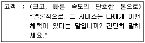
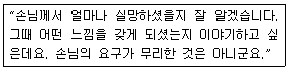

텔레마케팅관리사 (2007-08-05 기출문제)
1과목: 판매관리
1. 제품이나 프로그램의 수명주기를 연장시키기 위한 전략 중 새롭게 수정 혹은 개발된 프로그램으로 새로운 시장에 진출하는 것은?
- 시장침투
- 프로그램개발
- 시장개발
- 프로그램다각화
(정답률: 알수없음)

2. CTI(Computer Telephony Integration)에 대한 설명으로 틀린 것은?
- 컴퓨터와 텔레포니가 서로 연결·통합되도록 하는 정보 기술과 이를 통해 업무에서 활용할 수 있는 솔루션을 의미한다.
- CTI는 모뎀과 통신 소프트웨어에서 이미 적용되고 있는 기술이다.
- 전화국선과 내선을 연결 처리한다.
- 통신 소프트웨어는 모뎀 드라이브를 통해 모뎀과 상호동작하여 데이터 커뮤니케이션 작업을 수행할 수 있도록 해주는 CTI 솔루션이다.
(정답률: 알수없음)
3. 잠재고객에 대한 설명으로 옳은 것은?
- 자사에 한번 이상 방문한 고객
- 상품을 구매하지는 않았으나, 상품에 대해 관심을 가지고 있는 고객
- 자사 제품을 정기적으로 구매하는 고객
- 자사에서 판매하는 모든 상품을 구매하는 고객
(정답률: 알수없음)
4. 마케팅전략 수립에 직접적으로 관련된 당사자인 3C에 해당되지 않는 것은?
- Converter
- Customer
- Company
- Competitor
(정답률: 알수없음)
5. 가격결정에 영향을 미치는 요인 중 내부적 요인에 해당하지 않는 것은?
- 마케팅 목표
- 목표시장 점유율
- 마케팅믹스 전략
- 경쟁사 가격
(정답률: 알수없음)
6. 아웃바운드 텔레마케팅 활용분야가 아닌 것은?
- 가망고객 획득
- 대금회수
- 계약갱신
- 예약예매 처리
(정답률: 알수없음)
7. 광고보다 인적 판매(판매원에 의한 판매)가 더 유리한 경우는?
- 고객의 수가 많음
- 고객이 지역적으로 분산되어 있음
- 표준화된 제품
- 기능설명이 필요한 고가의 제품
(정답률: 알수없음)
8. 고객관계관리(CRM)에 대한 설명으로 옳은 것은?
- 장기적이라기보다는 단기적인 고객관계관리이다.
- 고객과의 갈등해소에 중점을 둔다.
- 고객을 유지하는 것보다는 판매를 성공시키는 데 중점을 둔다.
- 고객과 협조 신뢰를 쌓아 고객관계를 유지하는 것이다.
(정답률: 알수없음)
9. 아웃바운드 텔레마케팅 판매촉진 기획시 고려 사항으로 옳지 않은 것은?
- 단기 및 장기목표를 조화롭게 설정한다.
- TV 광고, DM 발송, 이벤트 개최 등의 고비용 판매촉진은 삼가한다.
- 다수의 정확한 고객정보를 확보한다.
- 명확한 판매 포인트를 포착하여 구매행위를 유도할 수 있는 방법을 제시한다.
(정답률: 알수없음)
10. 텔레마케팅을 실시하기 위한 준비 요소가 아닌 것은?
- 텔레마케터의 교육 및 훈련
- 고객 데이터베이스 분석 및 전략 수립
- 고객 반응률 분석
- 타 매체와의 믹스 전략
(정답률: 알수없음)
11. 아웃바운드 텔레마케팅의 특징으로 옳지 않은 것은?
- 공격적이며 성과지향성이 강하다.
- 데이터베이스 마케팅 기법을 활용할수록 위력적이다.
- 스크립트를 활용하는 경향이 높다.
- 통화 콜 수를 통제하기 어렵다.
(정답률: 알수없음)
12. 아웃바운드 텔레마케팅의 효과적인 운영방법으로 적합한 것은?
- 가능한 많은 양의 고객 DB를 텔레마케터에게 배포한다.
- 1차 거절한 고객 DB는 재활용해서는 안 된다.
- 가능하면 콜량을 최대화하고, 한 콜은 보통 10분 이상 통화한다.
- 구체적인 목표를 설정하고 일, 주, 월 단위로 목표관리를 한다.
(정답률: 알수없음)
13. 아웃바운드 텔레마케팅을 활용하는 마케팅 전략이라 볼 수 없는 것은?
- 매스 마케팅
- 다이렉트 마케팅
- 데이터베이스 마케팅
- 일대일 마케팅
(정답률: 알수없음)
14. 기업의 마케팅 활동에 고객 데이터베이스가 필요한 이유가 아닌 것은?
- 고객의 요구에 부합하는 제품 및 서비스를 창조한다.
- 고객을 몇 개의 그룹으로 나누어 집단화된 구매제안만을 할 수 있다.
- 반응을 측정하고 결과를 예측할 수 있게 한다.
- 고객들에게 다가갈 수 있는 독창적인 구매제안을 하게 한다.
(정답률: 알수없음)
15. 고객의 데이터베이스 분석방법 중 RFM 방법에 해당하지 않는 것은?
- 친밀도(Friendship)
- 최종구입일(Recency)
- 구매빈도(Frequency)
- 구매금액합계(Monetary)
(정답률: 알수없음)
16. 생산자가 대량광고와 판매촉진을 하는 소비재의 유형에 해당하는 것은?
- 편의품
- 선매품
- 전문품
- 비탐색품
(정답률: 알수없음)
17. 고객의 다양한 정보를 컴퓨터에 축적하여 이것을 가공·비교·분석·통합하여 마케팅 활동에 재활용할 수 있도록 하는 마케팅 기법은?
- 표적 마케팅
- 고객관리 마케팅
- 데이터베이스 마케팅
- 정보화 마케팅
(정답률: 알수없음)
18. 다음은 무엇에 관한 설명인가?

- ACD
- AID
- ANI
- ATH
(정답률: 알수없음)
19. 고객의 행동별에 따른 단계 중 구매가능자 중에서 자사의 제품서비스에 대하여 필요성을 느끼지 못하거나, 구매할 능력이 없다고 확실하게 판단되는 자는?
- 비자격잠재자
- 최초구매자
- 구매용의자
- 구매가능자
(정답률: 알수없음)
20. 텔레마케팅 용어의 설명으로 잘못된 것은?
- 콜 라우팅 - 컴퓨터가 수신된 콜을 상담원에게 적절하게 분배하는 기능
- 스크린 팝 - 기존에 거래하였거나 회원으로 등록된 고객에게 전화가 오면 고객정보를 상담원이 알 수 있도록 화면에 띄워주는 것
- IVR - 외부에서 걸려온 전화를 추적하는 기능
- Trunk - 전화국과 PBX 또는 그 외의 단말장치를 접속하는 통신경로
(정답률: 알수없음)
21. 아웃바운드 텔레마케터가 갖추어야 할 기본 요건에 해당하지 않는 것은?
- 문제해결 능력
- 특이사항 및 개성
- 커뮤니케이션 기술
- 상품 지식
(정답률: 알수없음)
22. 데이터베이스 마케팅의 장점이 아닌 것은?
- 컴퓨터와 시스템을 전략적으로 활용한다.
- 텔레마케팅 같은 다양한 마케팅 기법을 활용한다.
- 고객지향적인 마케팅을 구사할 수 있다.
- 기존고객을 줄이고 신규고객을 늘릴 수 있다.
(정답률: 알수없음)
23. 데이터베이스 마케팅의 활용범위로 적합하지 않은 것은?
- 신용카드 고객을 관리하는 데 활용한다.
- 우수고객을 차별 관리하는 데 활용한다.
- 연체관리시스템에 활용한다.
- 회계관리시스템에 활용한다.
(정답률: 알수없음)
24. 가격할인의 형태 중 신모델을 구입할 경우 구모델을 반환하면 그만큼 가격을 할인해 주는 방법은?
- 현금할인
- 수량할인
- 계절할인
- 공 제
(정답률: 알수없음)
25. 다음 중 아웃바운드 판매전략의 과정으로 바르게 나열된 것은?
- 잠재고객 특성 정의 → 잠재고객 파악 → 등급화 → 판매 → 사후관리
- 잠재고객 파악 → 잠재고객 특성 정의 → 등급화 → 판매 → 사후관리
- 잠재고객 특성 정의 → 등급화 → 잠재고객 파악 → 판매 → 사후관리
- 잠재고객 파악 → 등급화 → 잠재고객 특성 정의 → 판매 → 사후관리
(정답률: 알수없음)
2과목: 시장조사
26. 과학적 조사방법의 특성으로 옳지 않은 것은?
- 과학적 조사방법은 개인적 경험, 직관, 감성을 근거로 자료를 수집하여 시장문제를 분석한다.
- 조사자는 시장문제를 구성하고 있는 요소들을 구분하고 그 상호관계를 분석함으로써 시장문제의 원인을 파악하고 해결방안을 모색한다.
- 과학적 조사방법을 통해 시장조사과정과 분석과정에서 오류를 최소화하도록 해야 한다.
- 과학적 조사방법으로 시장의 문제점을 발견하고, 원인규명을 통하여 시장문제를 예측할 수 있다.
(정답률: 알수없음)
27. 시장조사의 조사방법 중 탐색조사의 종류가 아닌 것은?
- 문헌조사
- 표적집단면접법
- 사례조사
- 실험조사
(정답률: 알수없음)
28. 시장조사과정에서 조사목표의 3가지 기본요소가 아닌 것은?
- 조사문제
- 정보가치의 평가
- 가설의 개발
- 조사의 범위
(정답률: 알수없음)
29. 설문지 회수율을 높이는 노력으로 적절하지 않은 것은?
- 독촉편지를 보내거나 독촉전화를 한다.
- 겉표지에 설문내용의 중요성을 부각시켜 응답자가 인식하게 한다.
- 개인 신상에 민감한 질문들을 가능한 줄인다.
- 폐쇄형 질문의 수를 가능한 줄인다.
(정답률: 알수없음)
30. 전화조사에 의한 자료수집 중 전화질문 절차에 있어서 전화라는 통신수단의 특성상 전화질문 설계로 잘못된 것은?
- 구체적이고 주관적인 질문
- 응답자의 이해도 고려
- 가능한 양자택일형 질문구성
- 조사내용의 간단한 설명
(정답률: 알수없음)
31. 다음 시장조사의 과정을 올바른 순서대로 나열한 것은?

- ㉣ → ㉡ → ㉢ → ㉠ → ㉤
- ㉠ → ㉡ → ㉢ → ㉣ → ㉤
- ㉡ → ㉢ → ㉠ → ㉣ → ㉤
- ㉣ → ㉠ → ㉡ → ㉢ → ㉤
(정답률: 알수없음)
32. 질문지 작성시 폐쇄형 질문의 장점이 아닌 것은?
- 부호화와 분석이 용이하여 시간과 경비를 절약할 수 있다.
- 민감한 주제에 보다 적합하다.
- 질문지에 열거하기에는 응답범주가 너무 많을 경우에 사용하면 좋다.
- 질문에 대한 대답이 표준화되어 있기 때문에 비교가 가능하다.
(정답률: 알수없음)
33. 텔레마케터가 전화조사를 할 때 응답자가 대답을 회피하거나 답하기를 꺼릴 수 있는 경우가 아닌 것은?
- 응답자가 경험한 적이 없거나 오래되어 기억하기 어려운 경우
- 텔레마케터가 너무 사무적이거나 불친절한 경우
- 합법적인 목적이나 취지가 담긴 경우
- 사회적으로 무리가 있는 성이나 기타 민감한 정보를 질문하는 경우
(정답률: 알수없음)
34. 검정요인 중 총체적 개념과 다른 변수와의 관계에 있어서 총체적 개념을 구성하는 요소들 중 어떤 것이 관찰된 결과에 결정적인 영향을 미치는가 하는 것을 파악하는 데 사용되는 것은?
- 억제변수
- 왜곡변수
- 구성변수
- 매개변수
(정답률: 알수없음)
35. 조사시 활용되는 변수에 대한 설명으로 옳지 않은 것은?
- 독립변수는 한 변수(X)가 다른 변수(Y)에 시간적으로 선행하면서 X의 변화가 Y의 변화에 영향을 미칠 때 영향을 미치는 변수를 의미한다.
- 교육수준에 따라 월평균소득에 차이가 있다면 월평균소득이 종속변수가 된다.
- 연속변수는 사람·대상물 또는 사건을 그들 속성의 크기나 양에 따라 분류하는 것이다.
- 이산변수는 측정한 값들이 척도상에서 미분을 해도 가능할 만큼 연속을 띤 것으로 거의 무한개의 값을 가질 수 있다.
(정답률: 알수없음)
36. 설문지 질문문항의 작성방법으로 틀린 것은?
- 응답자가 이해하기 쉬운 표현을 사용하여야 한다.
- 한 질문에 한 가지 이상의 질문을 통해 설문의 효율성을 높여야 한다.
- 유도 또는 강요하는 표현을 금지하여야 한다.
- 응답자가 대답하기 곤란한 질문들에 대해서는 직접적인 질문을 피하도록 한다.
(정답률: 알수없음)
37. 표본프레임(Sampling Frame)에 대한 설명으로 옳지 않은 것은?
- 표본을 추출하기 위한 모집단의 목록을 말한다.
- 표본추출단위가 집단인 경우에는 모집단의 목록인 표본프레임도 개인별 목록이 아니라 집단별 목록만 있으면 된다.
- 비확률표본추출방법을 이용할 경우 정확한 표본 프레임이 반드시 있어야 한다.
- 정확한 확률표본추출을 하기 위해서는 모집단과 정확하게 일치하는 표본프레임이 확보되어야 한다.
(정답률: 알수없음)
38. 조사의 유형에 대한 설명으로 적절하지 않은 것은?
- 전화조사 - 특정표본추출에 한계가 있다.
- 우편조사 - 질문문항들이 쉽게 이해될 수 있도록 단순한 질문을 사용해야 한다.
- 면접조사 - 다수의 면접원이 조사에 참여하기 때문에 조사결과의 객관성이 유지된다.
- 집단설문조사 - 한 번에 많은 응답자의 반응을 얻을 수 있으므로 시간을 단축시킬 수 있다.
(정답률: 알수없음)
39. 표본추출법 중 확률표본추출법의 특성에 해당되는 것은?
- 시간과 비용이 적게 듦
- 인위적 표본추출
- 표본오차의 추정이 가능
- 분석결과의 일반화에 제약
(정답률: 알수없음)
40. 응답자들이 전화조사에 응대하는 심리적인 동기요인이 아닌 것은?
- 자신의 의견이나 식견을 표현하고 싶은 욕망
- 사람들과 주고받는 교섭을 즐기는 심리
- 면접자를 돕고 싶은 이타적인 심리
- 사생활 침해에 대한 오인과 자기방어욕구 심리
(정답률: 알수없음)
41. 기술조사 중 횡단조사에 대한 설명으로 틀린 것은?
- 상이한 특성을 가지고 있는 집단들 사이의 측정치를 비교함으로써 차이를 규명하는 것이 목적이다.
- 정태적인 성격을 갖는다고 할 수 있다.
- 종단조사보다 표본의 크기가 상대적으로 크다.
- 직접적으로 측정결과에서 결론을 도출한다.
(정답률: 알수없음)
42. 표본조사의 궁극적 목적은?
- 모집단의 특성 추출
- 분산의 산출
- 표본의 평균치 산출
- 표준편차의 산출
(정답률: 알수없음)
43. 측정에 관한 설명으로 틀린 것은?
- 어떤 변수의 개념을 설명할 때 다른 개념을 사용해서 설명하는 것이 변수의 개념적 정의이다.
- 정확하고 측정 가능한 용어로 설명하는 것이 조작적 정의이다.
- 조작적 정의는 조사자의 판단과 마케팅 관리자의 정보 요구에 따라 달라지지 않는다.
- 측정은 조작적 정의에 따라 사전에 정해진 일정한 규칙에 의해 체계적으로 숫자를 부여하는 행위이다.
(정답률: 알수없음)
44. 사전검사에 관한 설명으로 틀린 것은?
- 사전검사를 통해 질문들이 갖는 문제점을 찾아내고 이를 보다 명료하게 수정한다.
- 사전검사는 반드시 많은 수의 응답자를 상대로 실시할 필요는 없다.
- 사전검사를 위해 응답대상자는 반드시 대표성을 가져야 한다.
- 사전검사의 방법은 본조사에서 사용하고자 하는 방법과 동일하게 한다.
(정답률: 알수없음)
45. 내적 타당도를 위협하는 요소가 아닌 것은?
- 특정사건의 영향
- 피실험자가 변화하는 데 따른 영향
- 통계학적 회귀효과
- 반작용효과
(정답률: 알수없음)
46. 시장조사의 역할과 거리가 먼 것은?
- 문제해결을 위해 조직적 탐색
- 불확실성과 위험성 극대화
- 고객의 심리적, 행동적인 특성 간파를 통한 고객만족경영
- 타당성과 신뢰성 높은 정보의 획득 및 의사결정능력 제고
(정답률: 알수없음)
47. 다음 중 확률표본추출방법에 해당하지 않는 것은?
- 계통표집
- 층화표집
- 편의표집
- 집락표집
(정답률: 알수없음)
48. 전화면접자가 지켜야 할 사항으로 볼 수 없는 것은?
- 정보누설 금지
- 개인적 이익창출 금지
- 면접규칙과 지시사항 수행
- 두 가지 이상의 면접업무 동시수행
(정답률: 알수없음)
49. 연구의 단위(Unit)를 혼동하여 집합단위의 자료를 바탕으로 개인의 특성을 추리할 때 저지를 수 있는 오류는?
- 집단주의 오류
- 생태주의 오류
- 개인주의 오류
- 환원주의 오류
(정답률: 알수없음)
50. 집단면접법에 관한 설명으로 틀린 것은?
- 집단의 규모는 8~12명으로 구성한다.
- 집단성격은 다양한 의견을 위해 이질적으로 구성한다.
- 환경은 편안하고 비공식적 분위기로 자발적인 참여를 유도한다.
- 집단구성원 간의 자유로운 참여를 유도하는 진행자의 역할이 중요하다.
(정답률: 알수없음)
3과목: 텔레마케팅관리
51. 아웃바운드 텔레마케팅의 설명으로 적합하지 않은 것은?
- 고객리스트는 반응률을 결정하는 중요 요소이다.
- 고객반응을 유도할 수 있는 적합한 제안이 필요하다.
- 기존고객이 이탈하지 않도록 하기 위한 적극적인 고객관리에 유효하다.
- 콜예측을 통한 서비스레벨을 효과적으로 관리하는 것이 중요하다.
(정답률: 알수없음)
52. 콜센터 슈퍼바이저에게 요구되는 자질에 관한 설명 중 틀린 것은?
- 조직의 목표가 달성될 수 있도록 최적의 콜센터 환경을 조성할 수 있어야 한다.
- 텔레마케터들의 통화품질, 업무성과, 근무만족도에 대해 평가 및 피드백을 할 수 있어야 한다.
- 콜센터의 운영 예산을 책정하고 집행할 수 있어야 한다.
- 조직 분위기를 활성화할 수 있는 다양한 이벤트와 프로모션을 실시할 수 있어야 한다.
(정답률: 알수없음)
53. 텔레마케터의 통화품질을 평가할 때 고려사항이 아닌 것은?
- 나이, 출신학교, 신장
- 음성능력, 표현능력, 정확한 발음
- 구술능력, 조직적응력, 목표의식
- 음성능력, 청취력, 집중력
(정답률: 알수없음)
54. 텔레마케팅 활용시 모니터링을 실시하여 얻어지는 이점이 바르게 연결되지 않은 것은?
- 고객 - 서비스에 대한 만족 및 불만족 요소를 전달할 수 있다.
- 화서 - 이미지 향상으로 고객확보와 이익이 발생한다.
- 상담원 - 상담자질이 향상된다.
- 모니터링 담당자 - 코칭 기술을 향상시킬 수 있다.
(정답률: 알수없음)
55. 성공하는 텔레마케팅 조직의 특성으로 적합하지 않은 것은?
- 공정한 성과평가 및 보상이 이루어진다.
- 직무별 목표와 책임이 분명하다.
- 인력개발을 위한 교육프로그램이 마련되어 있다.
- 생산성 향상을 위해 내부 커뮤니케이션은 최대한 제한되어 있다.
(정답률: 알수없음)
56. 텔레마케팅 조직구성원의 역할이 잘못 연결된 것은?
- 교육담당자 - 텔레마케터의 경력개발을 위한 교육프로그램을 개발한다.
- 모니터링담당자 - 텔레마케터가 고객과 통화한 내용을 분석한다.
- 시스템담당자 - 텔레마케터가 효율적으로 업무를 할 수 있도록 스크립트를 개발한다.
- 슈퍼바이저 - 텔레마케터의 스케줄을 관리한다.
(정답률: 알수없음)
57. 텔레마케팅에 대한 설명으로 가장 옳은 것은?
- 텔레폰과 마케팅의 결합어이다.
- 무작위의 고객 데이터베이스를 사용한다.
- 일방향의 커뮤니케이션이다.
- 고객반응에 대한 효과측정이 용이하다.
(정답률: 알수없음)
58. 다음 중 역할연기에 관한 설명으로 맞는 것은?
- 역할연기 당사자간 배역은 바꾸지 않는 것이 좋다.
- 스크립트의 내용은 수정없이 반복 연습한다.
- 녹음 테이프로 시간을 측정하며 연습한다.
- 일대 다수의 방식으로 진행하는 것이 바람직하다.
(정답률: 알수없음)
59. 콜센터의 성과관리방법 중 적당하지 않은 것은?
- 매일, 매주, 매월 등의 분명하며 도달 가능한 목표를 수립한다.
- 중간점검을 통해 성과향상을 위한 지원요소와 방해요소를 분석한다.
- 성과결과에 대한 공정한 평가가 이루어져야 한다.
- 성과평가결과에 따른 보상은 우수 텔레마케터에게만 집중한다.
(정답률: 알수없음)
60. 공식적 직위로 인해 부하의 복종을 요구할 수 있는 리더의 권리를 의미하며, 이것은 권한과 같은 개념으로 M. Weber가 관료제의 중요한 요소로 강조하는 권력의 원천은?
- 강압적 권력
- 보상적 권력
- 합법적 권력
- 전문적 권력
(정답률: 알수없음)
61. 걸려온 모든 전화 중 텔레마케터와 고객이 연결된 통화를 의미하는 것은?
- 인입호
- 응답호
- 포기호
- 상담호
(정답률: 알수없음)
62. 텔레마케팅 적용분야 중 업무의 복잡도가 가장 큰 분야는?
- 주문접수
- 고객서비스
- 판매지원
- 고객관리(CRM)
(정답률: 알수없음)
63. 텔레마케팅을 위한 스크립트의 작성방법 중 응답되는 내용을 예/아니오 식으로 나누고 이에 따라 다음의 질문이나 설명이 뒤따르도록 작성하는 것은?
- 회화식
- 질문식
- 차트식
- 혼합식
(정답률: 알수없음)
64. A 생명보험회사는 주요 5대 일간지에 저렴한 보험료의 상해보험상품을 광고하고, 고객들이 무료 전화를 이용하여 전화를 걸어오면 보험 가입을 받고 상품을 판매하고 있다. 이는 어떤 형태의 텔레마케팅으로 볼 수 있는가?
- 인바운드(Inbound), 기업 대 소비자 (B to C)
- 인바운드(Inbound), 기업 대 기업 (B to B)
- 아웃바운드(Outbound), 기업 대 소비자(B to C)
- 아웃바운드(Outbound), 기업 대 기업(B to B)
(정답률: 알수없음)
65. 모니터링 평가를 위한 대상콜 선택시 고려해야 할 요소가 아닌 것은?
- 평균통화시간
- 문의유형
- 통화일시
- 상담원의 업무지식 정도
(정답률: 알수없음)
66. 텔레마케팅 관련 용어 중 QA의 바른 의미는?
- Quality Assist
- Questity Assert
- Quality Assurance
- Quality Agency
(정답률: 알수없음)
67. OJT와 OFF JT에 대한 설명이 올바르게 연결된 것은? (순서대로 <OJT>/ <OFF JT>)

- ㉠, ㉢, ㉤, ㉦ / ㉡, ㉣, ㉥, ㉧
- ㉠, ㉡, ㉤, ㉦ / ㉢, ㉣, ㉥, ㉧
- ㉠, ㉣, ㉥, ㉧ / ㉡, ㉢, ㉤, ㉦
- ㉡, ㉣, ㉥, ㉧ / ㉠, ㉢, ㉤, ㉦
(정답률: 알수없음)
68. 다음은 무엇에 관한 설명인가?

- 인사이동
- 보상관리
- 교육훈련
- 경력개발
(정답률: 알수없음)
69. 텔레마케터의 주요 업무가 아닌 것은?
- 재고정리
- 고객관리
- 정보수집과 자료정리
- 제품홍보 및 판촉활동
(정답률: 알수없음)
70. 콜센터 상담의 장점이 아닌 것은?
- 상담시 필요한 고객정보를 충분히 활용할 수 있다.
- 숙달된 상담원이 조리있게 설명한다.
- 고객의 상황을 쉽게 파악할 수 있다.
- 콜센터에서 이루어지는 업무진척도를 실시간에 확인할 수 있다.
(정답률: 알수없음)
71. 콜량 예측시 필요한 데이터와 관련 없는 것은?
- 대화시간
- 마무리시간
- 콜량 예측시간
- 평균처리시간
(정답률: 알수없음)
72. 아웃바운드형 콜센터의 성과분석 관리지표에 대한 설명으로 틀린 것은?
- 고객 DB 소진율 - 총 고객 DB 불출 건수 대비 텔레마케팅으로 소진한 DB 건수가 차지하는 비율
- 고객 DB 사용 대비 고객획득률 - 총 고객 DB 불출 건수 대비 고객으로 획득한 비율
- 1콜당 평균 전화비용 - 아웃바운드 텔레마케팅을 하였을 경우 1콜당 평균적으로 소요되는 전화비용의 정도
- 총 매출액 - 일정기간 동안 아웃바운드 텔레마케팅을 실행한 결과 발생한 총 매출액
(정답률: 알수없음)
73. 커뮤니케이션 장애요인 중 선택적 청취에 의한 장애요인은?
- 상황에 따른 장애
- 발신자에 의한 장애
- 수신자에 의한 장애
- 일반적인 장애
(정답률: 알수없음)
74. 다음은 콜센터 시스템 중 무슨 기능에 관한 설명인가?

- CTI 기능
- Call Blending 기능
- 음성인식 기능
- Skill Based Call Routing 기능
(정답률: 알수없음)
75. 콜센터에서 QAA의 기본적인 자격요건이 아닌 것은?
- 지 식
- 평 가
- 태 도
- 기 술
(정답률: 알수없음)
4과목: 고객응대
76. 효과적인 커뮤니케이션 방법으로 적당한 것은?
- 일반화된 약어를 사용한다.
- 전문지식을 화제로 선택한다.
- 개인의 주관적인 생각과 감정을 전달한다.
- 적극적 경청을 통하여 고객의 욕구를 파악한다.
(정답률: 알수없음)
77. 전화상담시 적합하지 않은 응대방법은?
- 가능한 한 전문용어를 사용하여 전문가처럼 보이게 한다.
- 맑고 밝은 음성을 유지한다.
- 상대를 배려하는 마음가짐과 올바른 경어를 사용한다.
- 상황에 따라 적절하고 감각적인 대응을 한다.
(정답률: 알수없음)
78. 소비자욕구를 파악하기 위해 고객조사를 할 때 폐쇄형 질문이 적절한 경우는?
- 문제의 원인이나 배경에 대해 새로운 정보를 얻어야 할 때
- 편견없이 가능한 한 다양하고 많은 정보를 모아야 할 때
- 여러 대안 중 소비자의 최종결정사항을 확인하고자 할 때
- 소비자들의 보편적인 사고방식에 대한 기존 정보가 없을 때
(정답률: 알수없음)
79. 고객 성격의 특성에 따른 응대법 중 올바르지 않은 것은?
- 급한 성격은 신속하게 행동하고 설명도 핵심만 강조한다.
- 결단성이 없는 성격은 기회를 잡아 빨리 요점만 설명한다.
- 내성적인 성격은 조용하게 응대하고 상대의 의견을 충분히 들어준다.
- 흥분을 잘하는 성격은 부드러운 분위기를 유지하며 강압하지 않는다.
(정답률: 알수없음)
80. 텔레마케터가 갖추어야 할 자질로서 옳지 않은 것은?
- 조직적응력, 풍부한 지식
- 정확한 발음과 구술능력
- 주관적 사고와 즉각적인 응답
- 훌륭한 청취력과 집중력
(정답률: 알수없음)
81. 인바운드 상담절차를 옳게 나열한 것은?
- 상담준비 → 전화응답 → 고객니즈 파악 → 문제해결 → 동의와 확인 → 종결
- 상담준비 → 동의와 확인 → 전화응답 → 고객니즈 파악 → 문제해결 → 종결
- 상담준비 → 고객니즈 파악 → 동의와 확인 → 전화응답 → 문제해결 → 종결
- 상담준비 → 문제해결 → 동의와 확인 → 고객니즈 파악 → 전화응답 → 종결
(정답률: 알수없음)
82. 전화상담에서 필요한 말하기 기법에 관한 설명으로 틀린 것은?
- 전화로 이야기할 때에도 미소를 지으며, 필요한 낱말에 강세를 두어 말한다.
- 어조를 과장하여 억양에 변화를 주는 것은 소비자의 집중력을 약화시키므로 바람직하지 않다.
- 소비자가 말하는 속도에 보조를 맞추되, 상담사는 되도록 천천히 말하는 습관을 갖는 것이 좋다.
- 명확한 발음을 하기 위해 큰소리로 반복해서 연습하는 것이 필요하다.
(정답률: 알수없음)
83. 화가 많이 난 소비자를 대할 때의 상담기술로 적합한 것은?
- 일단은 소비자를 안심시켜 화난 이유를 정확히 말하도록 유도한다.
- 소비자의 감정상태를 인정하는 것은 무조건 문제를 수용하겠다는 것을 의미하므로 삼가야 한다.
- 소비자가 이야기할 때 중간에 계속 끼어들어 화를 가라앉히도록 유도한다.
- 상담 초기에 소비자의 감정적인 표현을 무시하여 객관적인 사실만 말하도록 유도한다.
(정답률: 알수없음)
84. 스크립트의 필요성에 대한 설명으로 가장 옳은 것은?
- 고객맞춤서비스 제공
- 상담능력 향상 및 보완
- 동기 부여
- 스트레스 해소
(정답률: 알수없음)
85. 다음의 고객 관련 내용을 토대로 고객의 커뮤니케이션 유형을 진단할 때 이 고객과의 상담을 성공적으로 이끌기 위해 요구되는 상담요령으로 가장 효과적인 것은?

- 서비스 특징을 다양한 예를 들어가며 설명한다.
- 가능한 한 짧게, 요점만을 명확하게 말한다.
- 고객이 원하는 특징과 이점을 설명하고 고객시간을 배려하여 결정을 유보하도록 권유한다.
- 상품의 장단점을 비롯한 다양한 특징들을 구체적으로 또는 논리적이고 체계적으로 설명한다.
(정답률: 알수없음)
86. 소비자상담의 촉진관계를 위해 필요한 상담자의 바람직한 태도 및 행동 특징이 아닌 것은?
- 공감적 이해
- 일관적 성실
- 수용적 존중
- 일반적 능력
(정답률: 알수없음)
87. 경청을 하기 위한 상담자의 효과적인 반응은?
- 여과적 경청
- 동정적 경청
- 평가적 경청
- 반영적 경청
(정답률: 알수없음)
88. 최근 사용되는 전자 커뮤니케이션의 방법 중 한 번에 가장 많은 사람에게 정보를 전달할 수 있는 수단은?
- 팩 스
- 원격화상회의
- 이동통신
- 이메일
(정답률: 알수없음)
89. 훌륭한 고객서비스를 위해 개발해야 할 서비스 습관이 아닌 것은?
- 시간을 엄수한다.
- 약속을 철저히 지킨다.
- 고객을 업무의 가장 중요한 요소로 생각한다.
- 외부고객의 서비스 개선에만 관심을 갖는다.
(정답률: 알수없음)
90. 서비스의 품질을 결정하는 요소가 아닌 것은?
- 신뢰성
- 공감성
- 무형성
- 반응성
(정답률: 알수없음)
91. 텔레마케팅을 통한 고객응대 특징이 아닌 것은?
- 고객과 텔레마케터 간의 쌍방향 커뮤니케이션이다.
- 전화장치를 활용한 비대면 중심의 커뮤니케이션이다.
- 텔레마케팅에서는 비언어적인 메시지를 사용하지 않는다.
- 고객상황에 맞추어 융통성 있는 커뮤니케이션이 가능하다.
(정답률: 알수없음)
92. 고객은 텔레마케터로부터 인정과 존중, 수용의 욕구를 가지고 있다. 이러한 고객의 욕구를 충족시켜 줄 수 있는 고객응대 내용으로 옳은 것은?
- 고객의 사소한 질문을 지적한다.
- 고객의 이름을 부르며 의견을 경청한다.
- 텔레마케터의 생각을 일방적으로 이야기한다.
- 항상 반론을 한다.
(정답률: 알수없음)
93. 콜센터에서의 우량고객에 대한 고객응대 방법으로 옳지 않은 것은?
- 우량고객 전담 상담원을 두어 고객응대를 한다.
- ARS를 거치지 않고 상담원과 바로 연결되도록 한다.
- 우량고객에 대해서는 장시간 장황하고 세밀하게 응대한다.
- 우량고객에 해당하는 별도의 혜택을 제공한다.
(정답률: 알수없음)
94. 인터넷 콜센터에 대한 설명으로 틀린 것은?
- 웹상에서 고객상담이 이루어진다.
- 비대면 접촉성이 낮다.
- 실시간 접촉 및 상담이 가능하다.
- 상호교감적이다.
(정답률: 알수없음)
95. 최초가입일, 거래연수, 연체기록 등 거래와 연관된 데이터는?
- 고객인적 데이터
- 생활상황 데이터
- 혼합 데이터
- 거래행동 속성 데이터
(정답률: 알수없음)
96. 구매 전 상담에서 제품정보를 제공하는 목적이 아닌 것은?
- 경쟁제품과 비교할 수 있도록 하는 것이다.
- 소비자가 지불하는 제품값과 품질의 합리성을 설명하는 것이다.
- 소비자가 충동구매할 수 있게 만드는 것이다.
- 기업의 좋은 이미지를 형성하려는 목적이다.
(정답률: 알수없음)
97. 인바운드 상담의 활용분야와 거리가 먼 것은?
- 주문접수 처리
- 예약 및 예매 접수
- 각종 컴플레인, 불평, 불만접수 처리
- 재구매 유도
(정답률: 알수없음)
98. 커뮤니케이션 네트워크 중 구성원 간의 상호작용이 집중되어 있지 않고 널리 분산되어 있는 유형으로 위원회 같은 조직에서 나타나며, 수평적 네트워크를 형성하는 것은?
- 사슬형
- 수레바퀴형
- Y 형
- 원 형
(정답률: 알수없음)
99. 다음과 같은 응대기법은 소비자의 어떤 욕구를 충족시키기 위한 것인가?

- 존경을 받고자 하는 욕구
- 자신의 문제에 대해 공감해주기를 바라는 욕구
- 적시에 신속한 서비스를 받고자 하는 욕구
- 공평하게 대접받고자 하는 욕구
(정답률: 알수없음)
100. 언어적 메시지와 비언어적 메시지에 대한 설명으로 올바른 것은?
- 언어적인 메시지는 구두 메시지만을 말한다.
- 문자 메시지는 직접적인 말을 이용한 것이다.
- 문자 메시지는 비언어적인 메시지에 속한다.
- 비언어적인 메시지는 표정, 자세, 음성, 눈치, 몸짓을 말한다.
(정답률: 알수없음)